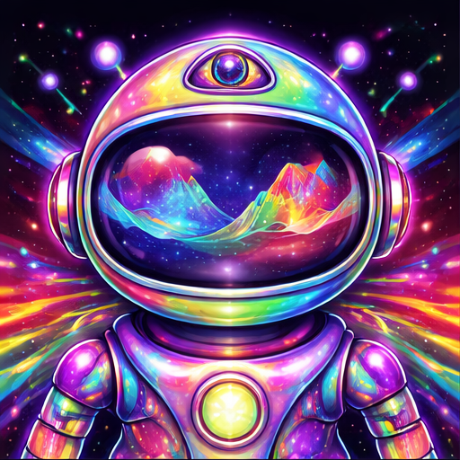
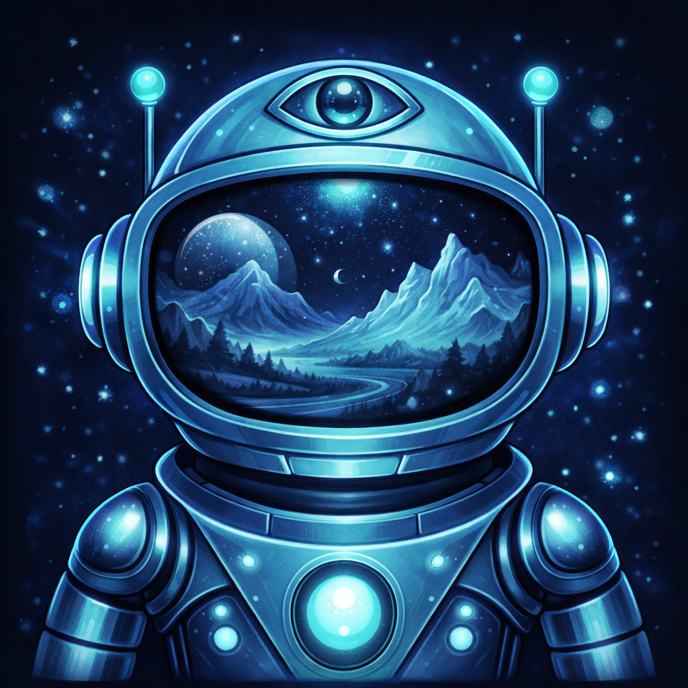

Cyan tool use · Glow active · Status dots · Stop in composer · Sidebar trigger options · Logo options
Avatar
✨Sparkle
Neural
Bolt
Orbit
Gradient
AGlow
Icon+Text
Spark
AaPlain
Active Conversation

AXON
What embedding model does Axon use and how does the chunking work?

2.3s
Axon uses TEI (Text Embeddings Inference) for embeddings — a self-hosted HuggingFace service producing 1024-dim vectors. Chunking is handled by chunk_text() which splits at 2000 chars with 200-char overlap.
Sources
crates/vector/ops/tei.rs
crates/core/content.rs
query · "TEI embedding config"
Ask anything...
Streaming Response
AXON
How does hybrid search work in named-mode collections?
thinking...
The user is asking about RRF hybrid search. Let me look at how dense and BM42 sparse vectors are combined...
query · "hybrid search RRF"
Found 8 results from crates/vector/ops/qdrant/...
Named-mode collections use two vector types: a dense vector (1024-dim from TEI) and a BM42 sparse vector. Results are merged using Reciprocal Rank Fusion